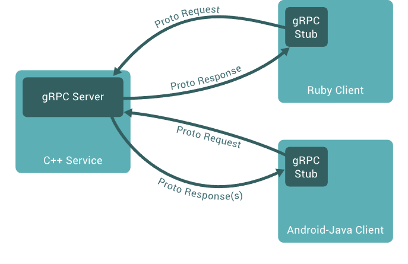

距離上一次碰 gRPC 已經是 4 年前的事情了，現在又有機會接觸到 gRPC，趁這次機會重新將 gRPC 相關的東西了解一次
什麼是 gPRC，根據官網的說明
A high performance, open source universal RPC framework
為什麼選擇 gPRC 呢
gRPC is a modern open source high performance Remote Procedure Call (RPC) framework that can run in any environment. It can efficiently connect services in and across data centers with pluggable support for load balancing, tracing, health checking and authentication. It is also applicable in last mile of distributed computing to connect devices, mobile applications and browsers to backend services.
這表示 gRPC 是一個可以在各種語言/環境中，做到高效且擴充性佳的框架，十分有趣。繼續研讀下去
Introduction

這張圖說明了 gRPC Server 與 Client 間的溝通模式，基於 Proto 的定義，以 Protocol Buffer 格式來進行雙方的溝通。
protocol Buffers
gRPC 需定義 .proto 的文件，再透過工具就可以產生對應語言的程式碼，了解 proto 的語法是必須的
1 | syntax = "proto3"; |
- line 1: 宣告 proto 語法版本，如果不宣告，預設會使用
proto2語法 - 宣告 proto 語法版本有些限制，1) 必須是第一行 2) 不可以有註解說明
- line 4 - 7: 定義 gRPC Service 有哪些方法可以使用，接受的參數格式及回傳格分別為什麼, PascalCase 命名法
- line 10 - 17 是定義
message格式，可以想成是在定義 data model
Message Type
1 | syntax = "proto3"; |
-
SearchRequest有定義三個欄位，分別為 stringquery, 兩個 integers (page_number,results_per_page)，使用 scalar types -
後面的數字定義，可使用範圍為 1 到 536,870,911，不能使用的數字區間限制有
- 系統預設的保留區段 19,000 到 19,999
- 被 Extension 規範的範圍 (Link)
-
一個 message 定義內的數字不能重複
-
一旦 message 有被使用，就不能更改數字
-
數字修改的行為意思，等同欄位被刪除
-
為了 message size，效能考量，數字應從 1 開始使用，size 規則為 1 到 15 會使用 1 byte，而 16 到 2047 會占用 2 bytes。(Ref: Message Structure)
-
message 可以定義在單一
proto檔案或多個，但會建議一個proto檔案內的 message 定義不應該太多 -
註解 syntax :
//或是/*....*/ -
如果要刪除欄位，需要
reserve原本欄位使用的數字，已避免未來被誤用1
2
3
4message Foo {
reserved 2, 15, 9 to 11;
reserved "foo", "bar";
} -
可定義及使用
Enum型別1
2
3
4
5
6
7
8
9
10
11
12
13
14
15
16
17enum Corpus {
CORPUS_UNSPECIFIED = 0;
CORPUS_UNIVERSAL = 1;
CORPUS_WEB = 2;
CORPUS_IMAGES = 3;
CORPUS_LOCAL = 4;
CORPUS_NEWS = 5;
CORPUS_PRODUCTS = 6;
CORPUS_VIDEO = 7;
}
message SearchRequest {
string query = 1;
int32 page_number = 2;
int32 results_per_page = 3;
Corpus corpus = 4;
}- Enum 定義時必須要有 0，因為 Enum 型別的預設值是 0
-
如果 Enum 內有出現值重複的需求，這時候需要設定
allow_alias = true1
2
3
4
5
6
7
8
9
10
11
12
13
14enum EnumAllowingAlias {
option allow_alias = true;
EAA_UNSPECIFIED = 0;
EAA_STARTED = 1;
EAA_RUNNING = 1;
EAA_FINISHED = 2;
}
enum EnumNotAllowingAlias {
ENAA_UNSPECIFIED = 0;
ENAA_STARTED = 1;
// ENAA_RUNNING = 1; // Uncommenting this line will cause a warning message.
ENAA_FINISHED = 2;
} -
有 Nested Types
1
2
3
4
5
6
7
8
9
10
11
12message SearchResponse {
message Result {
string url = 1;
string title = 2;
repeated string snippets = 3;
}
repeated Result results = 1;
}
message SomeOtherMessage {
SearchResponse.Result result = 1;
}